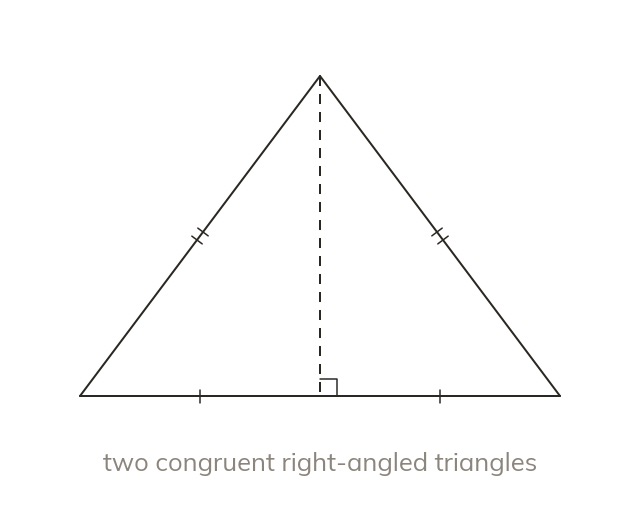
Split down the middle
The perpendicular from the apex of an isosceles triangle bisects its base. It splits the triangle into two congruent right-angled triangles.
Roof trusses, gable walls and tents are isosceles triangles whose height is rarely marked. Splitting the triangle down the middle makes two right-angled triangles, and Pythagoras finds the height.
Work down the page at your own pace. Write every answer in your book first, then click to check it.
Read each card, then follow the worked examples one step at a time.

The perpendicular from the apex of an isosceles triangle bisects its base. It splits the triangle into two congruent right-angled triangles.
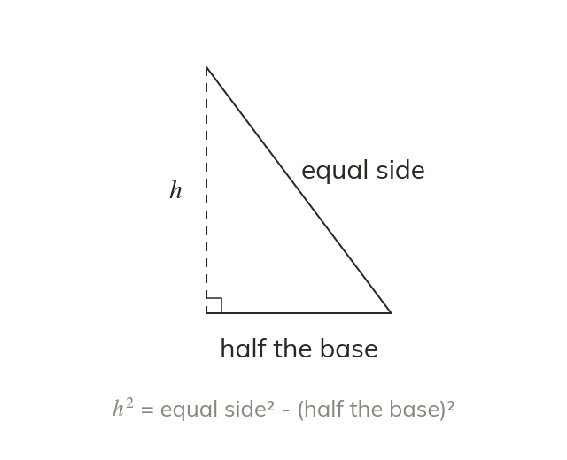
Each half has half the base and an equal side as hypotenuse. Pythagoras then gives the height.
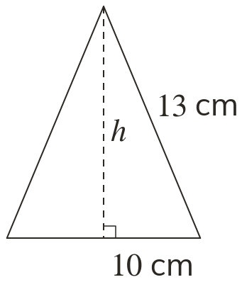
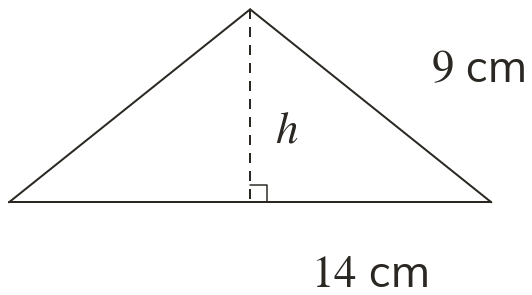
Pick an answer. If it's wrong, the feedback tells you which mistake it was.
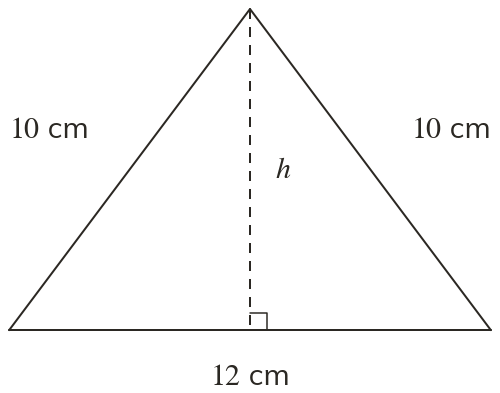
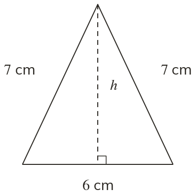
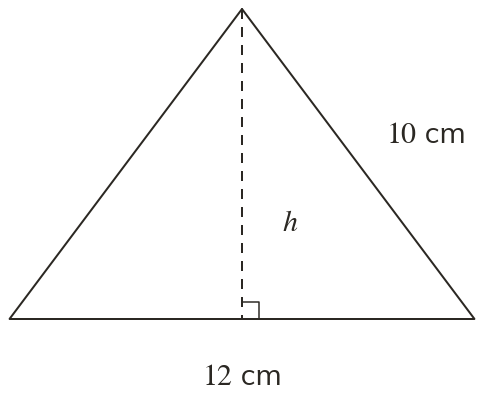
Read each card, then follow the worked examples one step at a time.
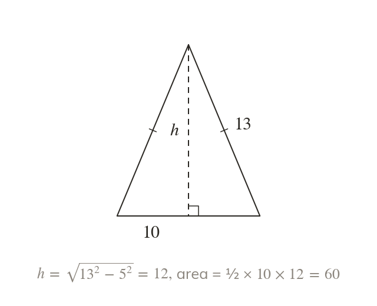
The area of an isosceles triangle is half the base times the perpendicular height. When that height is not given, Pythagoras finds it first.
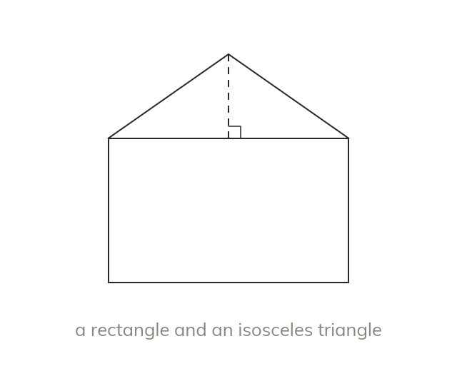
A compound shape such as a house outline is split into parts. Any missing height is found before the areas are added.
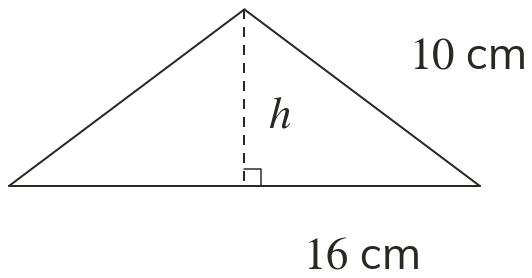
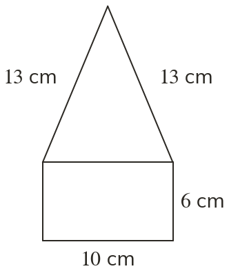
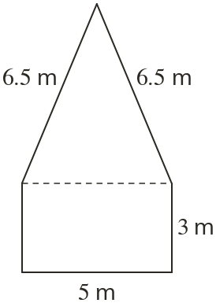
Pick an answer. If it's wrong, the feedback tells you which mistake it was.
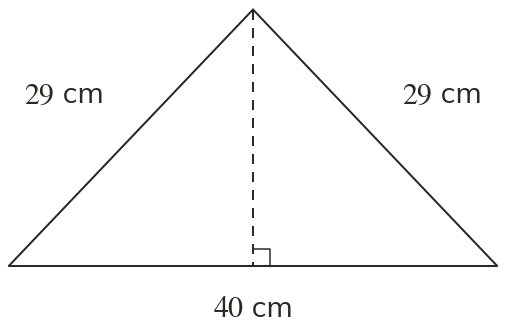
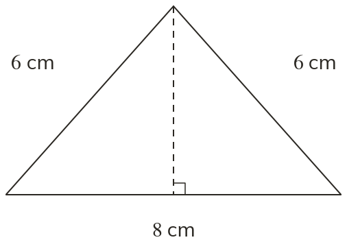
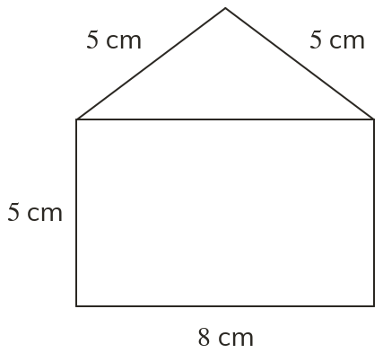
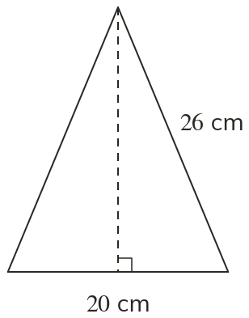
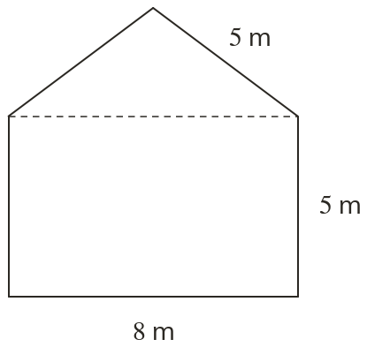
Finished? Next lesson: 8.12.1 Parallelograms and Trapeziums.
Log in, then search for a code to practise that skill.